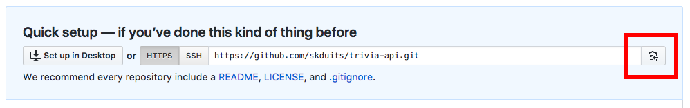
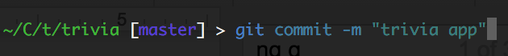

Homework Part 1: Git - Deploy App to GitHub Pages
Angular CLI initialized a git repository for you in your source folder. Angular CLI provides us a command to deploy our app to GitHub Pages.
Make sure you have created your GitHub account from the tools setup and are logged in to https://github.com in Google Chrome.
Create a new repository named trivia on github.com.
In Google chrome, navigate to https://github.com
In the upper-right corner, click +, and then click New repository.
Make sure Initialize this repository with a README is unchecked.

You must connect the repository from GitHub (on the internet) to this repository you now have locally on your computer. This is called adding a remote repository.
For more information on working with remotes read Git Basics - Working with Remotes from the Pro Git book
In Google Chrome on the GitHub site make sure you have your
triviarepository open.Click on the clipboard icon to copy the URL.

In Git Bash or iTerm2, add the remote. Type:
git remote add origin https://github.com/<your_github_username>/trivia.gitReplace the git URL with the URL you copied from the GitHub site in the previous step above.
Check which directories/files are unstaged (that Git doesn't yet know about). Type:
git statusYour files should display under a header of "Changes not staged for commit:" and should be red in color.
Stage the files so Git knows which files to deal with. In this case we want all of them so we just add all the files in the current directory. The current directory can be referenced as:
.. Type:git add .
Check to ensure all of your files are staged & ready to be committed. Type:
git statusNow, your files should display under a header of "Changes to be committed:" and should be green in color.
Commit the files so Git understands what group of changes to deal with. Feel free to change the commit message (the part in the quotation marks) if you'd like! Type:
git commit -m "I built a Single Page Application!"
Install the ghpages cli package. In Git Bash or iTerm2, type:
npm i -g angular-cli-ghpagesBuild the application so it is ready for production. Type:
ng build --prod --base-href "https://yourusername.github.io/trivia/"Run the deploy step. Type:
angular-cli-ghpagesView your App from Chrome or from your phone! The URL for your app should be something like https://yourusername.github.io/trivia